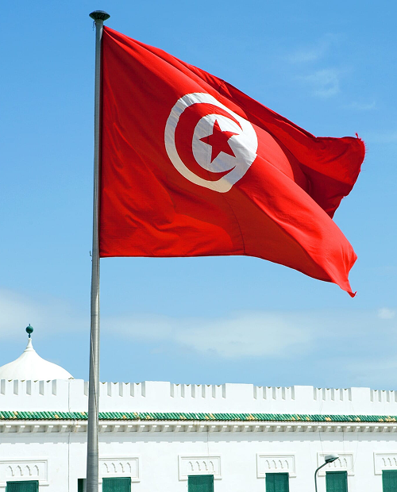
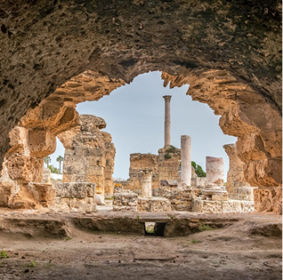
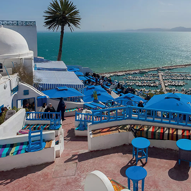
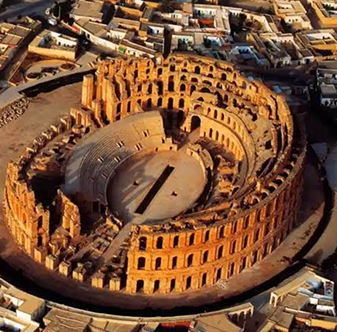
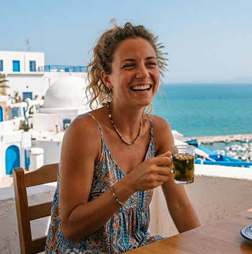

Get to know Tunisia better
Mediterranean Jewel
Situated at Africa’s northern tip, Tunisia seamlessly blends Mediterranean beaches, Saharan dunes, and rich Arab-Berber heritage. From ancient Carthage ruins to whitewashed coastal towns, this historic nation offers a stunning mosaic of ancient civilizations and vibrant traditions.

Most Famous Places

Carthage
Ancient Punic and Roman ruins overlooking the brilliant Mediterranean Sea.

Sidi Bou Saïd
Picturesque cliffside village famous for blue doors and whitewashed buildings.

El Jem Amphitheatre
A colossal, remarkably preserved Roman colosseum standing in central Tunisia.
Testimonials

Elena R.
"Exploring Carthage's ruins, sipping tea in Sidi Bou Saïd, and watching Sahara sunsets made Tunisia unforgettable. Pure magic!"